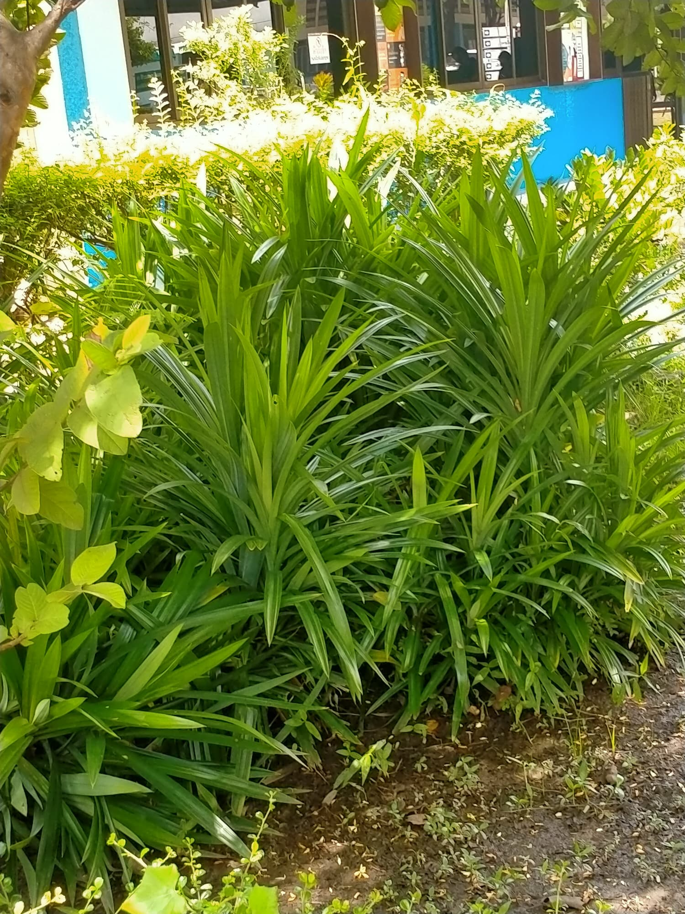

ต้นใบเตย
ต้นใบเตย
ประวัติความเป็นมา
เตยเป็นพืชที่คนไทยรู้จักกันเป็นอย่างดีมาตั้งแต่สมัยโบราณแล้ว เพราะได้นำมาใช้ประโยชน์ต่างๆมากมาย โดยเฉพาะส่วนของใบที่เราเรียกว่า ใบเตย จึงทำให้เรียกพืชชนิดนี้ติดปากกันมาจนถึงปัจจุบันว่า “ใบเตย”
รายละเอียดพืชพันธ์ุ
ใบเตยเป็นพืชใบเลี้ยงเดี่ยวลักษณะแตกกอเป็นพุ่มขนาดเล็ก ลำต้นเป็นข้อ ใบออกเป็นพุ่มบริเวณปลายยอด เมื่อโตจะมีรากค้ำจุนช่วย พยุงลำต้นไว้ ใบเป็นใบเดี่ยวออกเป็นกระจุกเรียงสลับเวียนเป็นเกลียวขึ้นไปจนถึงยอด ลักษณะใบยาวเรียวคล้ายใบหอก ปลายใบแหลม